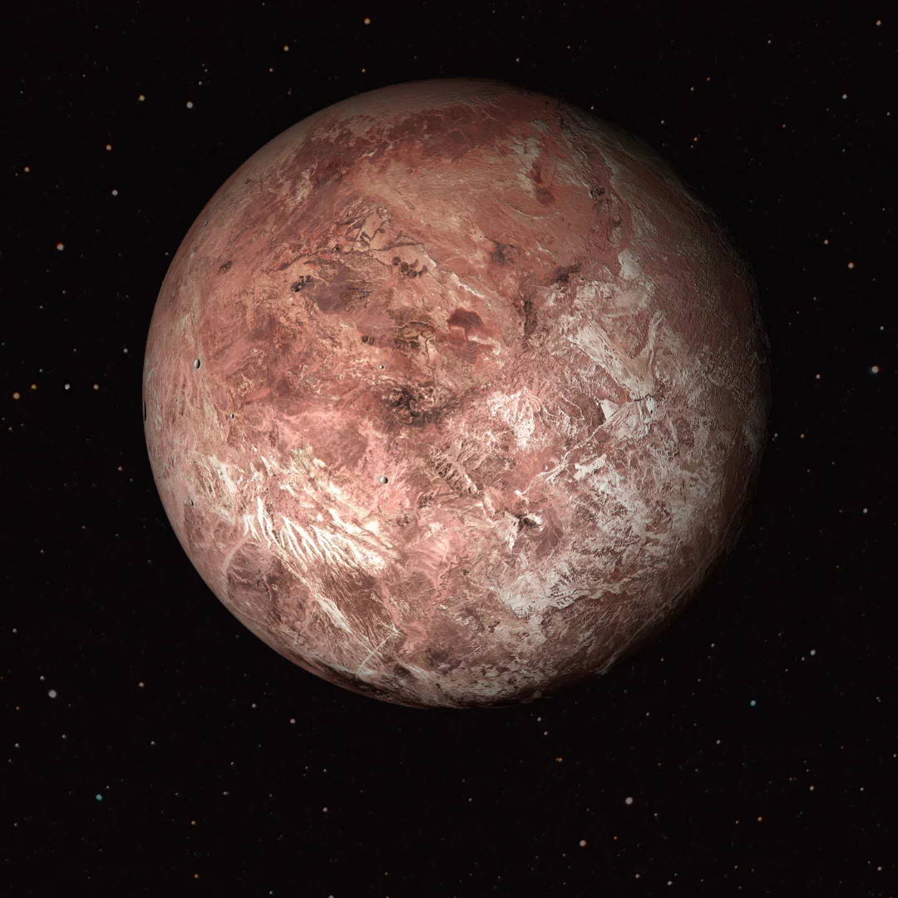

Makemake said, "I'm not like the other dwarf planets." She's just a little smaller than Pluto, but don't get it twisted—she's literally the second-brightest diva serving the Kuiper Belt from Earth's POV. Pluto may have snatched first place, but Makemake is RIGHT there. And mama? She takes a leisurely 305 Earth years to finish one lap around the Sun. She's not late, she's on celestial diva time.
This queen is literally history. Makemake and her sister Eris had the astronomy community so gagged they said, "We need to redefine what a planet even is." That's daughter behavior. Their serve was so powerful that the International Astronomical Union invented the whole "dwarf planet" category because the old labels simply weren't muggy enough.
History and Namesake
She made her grand debut in March 2005 when M.E. Brown, C.A. Trujillo, and D.L. Rabinowitz spotted this icon at the Palomar Observatory in California. Before the reveal, the girls were calling her "Easterbunny" because she popped off right after Easter. Then she was briefly serving government name realness as "2005 FY9" before finally getting the glamorous name Makemake.
